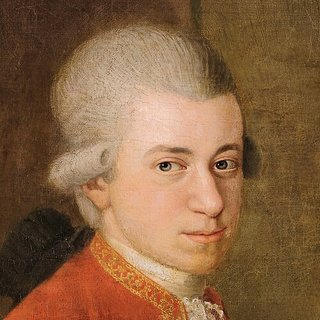

Compositores › Wolfgang Amadeus Mozart

Wolfgang Amadeus Mozart
O menino prodígio mais famoso da história: em apenas 35 anos de vida escreveu mais de 600 obras, das sinfonias às óperas.
Vida
Nasceu em Salzburgo, na Áustria. O pai, Leopold, violinista, logo percebeu o seu talento: aos cinco anos compôs as primeiras peças e aos seis partiu em turnê pelas cortes da Europa com a irmã Nannerl.
Adulto, deixou o emprego seguro na corte de Salzburgo e em 1781 instalou-se em Viena como músico independente: dava aulas, tocava os seus próprios concertos para piano e escrevia óperas como As Bodas de Fígaro, Don Giovanni e A Flauta Mágica.
Morreu em Viena em 1791, aos 35 anos, enquanto trabalhava no seu Réquiem, que ficou inacabado.
Retrato: Johann Nepomuk della Croce (c. 1780), domínio público, do Wikimedia Commons.

Curiosidades
- Em 1770, aos catorze anos, ouviu em Roma o Miserere de Allegri, que ninguém podia copiar, e transcreveu-o de memória.
- As suas obras estão numeradas no catálogo Köchel: por isso os títulos levam as letras «K» ou «KV», como K 331 e K 545.
- No seu catálogo pessoal anotou que a Sonata K 545 era «para principiantes»: por isso é chamada de «Sonata facile».
No piano
- Toque leve e claro: cada nota das escalas deve ser ouvida, sem pedal para encobri-la.
- O baixo de Alberti (acordes quebrados da mão esquerda) fica suave, por baixo da melodia.
- Mantenha o andamento regular: a elegância nasce da precisão.
Músicas para aprender 2 músicas

Aprenda nota por nota com o Piano Learning
Com “Espere a nota”, a música para até você tocar a tecla certa, no celular ou no seu próprio piano (o app escuta você). Mãos separadas, velocidade a partir de 10%, partitura sempre à frente.
Baixe grátis no Google Play Grátis como La Campanella, a Marcha Turca, Jingle Bells e Frère Jacques. Centenas de outras músicas com uma única compra, sem assinatura.